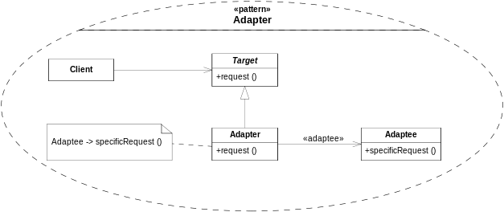

Адаптер -- паттерн, решающий проблему несовместимых интерфейсов. Например, когда у нас имеется объект, который необходимо встроить в систему, но который имеет несовместимый с системой интерфейс. Примером адаптеров из реальной жизни может служить переходник для разных типов розеток, переходник USB-microUSB, Jack-Minijack и т.д.
Структура паттерна

Для создания адаптера необходима система и адаптируемый объект. Система взаимодействует с объектом, имеющим интерфейс Terget. Адаптер реализует этот интерфейс и взаимодействует с адаптируемым объектом.
Применение паттерна Adapter
Паттерн адаптер применятся очень часто в огромном количетстве задач. Большое количество библиотек для языка Python являются адаптерами к другим библиотркам, написанным на С/С++. Использование подобных оберток позволяет увеличить производительность программ на этом языке.
Кроме библиотек паттерн адаптер часто используется в модулях для работы с базами данных. Это позволяет спрятать SQL-код и пользоваться простой и понятной оболочкой.
Еще адаптеры могут использоваться для сборки большого количества отдельных модулей в единую программу. Проблемы могут возникать, когда используются модули от старых проектов или написанные независимыми командами разработчиков и имеют несоглосованный интерфейс.
Стоит отметить, что если есть возможность, интерфейсы следует согласовывать и не использовать паттерн Адаптер. Это улучшит читаемость кода, так как в нем не будет лишних сущностей, мешающих пониманию а так же может немного улучшить производительность, так как не будет выполняться код собственно паттерна.
Пример использования паттерна Adapter
import re
from abc import ABC, abstractmethod
text = '''
Design Patterns: Elements of Reusable Object-Oriented Software is a software engineering book describing software design patterns. The book's authors are Erich Gamma, Richard Helm, Ralph Johnson and John Vlissides with a foreword by Grady Booch. The book is divided into two parts, with the first two chapters exploring the capabilities and pitfalls of object-oriented programming, and the remaining chapters describing 23 classic software design patterns. The book includes examples in C++ and Smalltalk.
It has been influential to the field of software engineering and is regarded as an important source for object-oriented design theory and practice. More than 500,000 copies have been sold in English and in 13 other languages. The authors are often referred to as the Gang of Four (GoF).
'''
class System: # Класс, представляющий систему
def __init__(self, text):
tmp = re.sub(r'\W', ' ', text.lower())
tmp = re.sub(r' +', ' ', tmp).strip()
self.text = tmp
def get_processed_text(self, processor): # Метод, требующий на вход класс-обработчик
result = processor.process_text(self.text) # Вызов метода обработчика
print(*result, sep = '\n')
class TextProcessor: # Абстрактный интерфейс обработчика
@abstractmethod
def process_text(self, text):
pass
class WordCounter: # Обработчик, несовместимый с основной системой
def count_words(self, text):
self.__words = dict()
for word in text.split():
self.__words[word] = self.__words.get(word, 0) + 1
def get_count(self, word):
return self.__words.get(word, 0)
def get_all_words(self):
return self.__words.copy()
class WordCounterAdapter(TextProcessor): # Адаптер к обработчику
def __init__(self, adaptee): # В конструкторе указывается, к какому объекту следует подключить адаптер
self.adaptee = adaptee
def process_text(self, text): # Реализация интерфейса обработчика, требуемого системой.
self.adaptee.count_words(text)
words = self.adaptee.get_all_words().keys()
return sorted(words, key = lambda x: self.adaptee.get_count(x), reverse = True)
system = System(text)
counter = WordCounter()
adapter = WordCounterAdapter(counter)
system.get_processed_text(adapter)